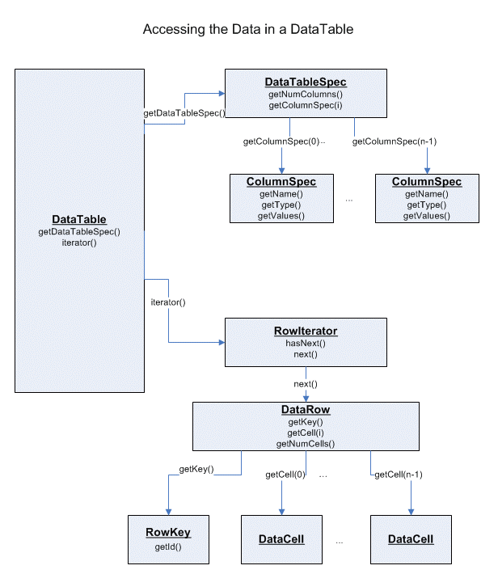

A {@link org.knime.core.data.DataTable DataTable} is used to pass data
along between nodes in the workflow.
It has rows and columns. The number of columns is fixed. The type of data stored
in each column is well defined, and each column has a unique name. Each row
consists of a certain number of cells (which contain the actual data) and a
unique row identifier. The data in a {@link org.knime.core.data.DataTable
DataTable} is read-only.
A {@link org.knime.core.data.DataTable DataTable} contains a {@link
org.knime.core.data.DataTableSpec DataTableSpec} object which describes the
structure of the table (the number of columns, the column types, etc.) and a
{@link org.knime.core.data.RowIterator RowIterator} which allows to iterate over
the rows of the table and actually access the data.
The iterator returns {@link org.knime.core.data.DataRow DataRow}s, that allow
access to all {@link org.knime.core.data.DataCell DataCell}s in this row by
index (the index of the column). The number of rows is usually not known in
advance (not in all tables), the iterator indicates when it reaches the end of
the table. As the source underlying the table could be sequential and of
arbitrary size, the general {@link org.knime.core.data.DataTable DataTable}
interface doesn't provide any random access methods.
The {@link org.knime.core.data.DataTableSpec DataTableSpec} contains the meta
information of the data table. It can be used to query the columns' name and
type, and the number of columns. In addition to that it is also used to pass
information along to connected successors to let them know of the structure of
the table to come. So, if the successor's preparations for execution (like the
settings) depend on the structure of the data table of the predecessor, it can
be set up after it received the {@link org.knime.core.data.DataTableSpec
DataTableSpec}.

{@link org.knime.core.data.DataCell DataCell}s are of certain type, depending on
the type of data appearing in the corresponding column. For each data cell type
certain objects exist describing the cell's properties, capabilities and
compatibilities. This is the {@link org.knime.core.data.DataCell DataCell}
derivative implementing {@link org.knime.core.data.DataValue DataValue}, which
defines how to access the value stored in the data cell.
Read more on data cells here and in
the FAQ.
Default implementations of {@link org.knime.core.data.DataCell DataCell}s can be
found in the org.knime.core.data.def
package. These implementations store the value of the cell in a member of the
corresponding Java data type.
{@link org.knime.core.data.DataTable DataTable}s could be arbitrary big, thus
they shouldn't be copied or held in memory.